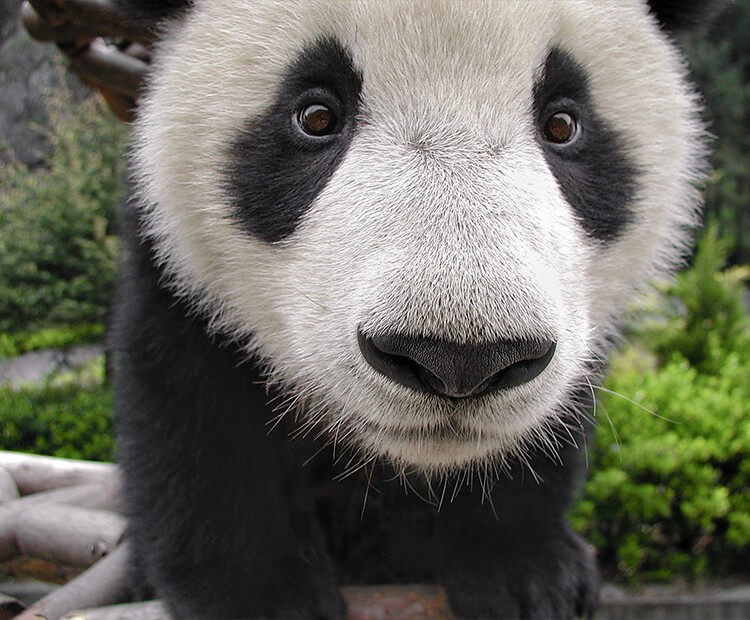

¡Bienvenido al fascinante mundo de los pandas! En este espacio,
descubrirás todo sobre estos adorables y majestuosos osos. Desde su
hábitat natural en los bosques de bambú hasta curiosidades sobre su
comportamiento, alimentación y conservación. Prepárate para enamorarte
de la dulzura y grandeza de estos maravillosos animales mientras
aprendes más sobre cómo viven y qué los hace tan especiales.
¡Acompáñanos en este viaje y conviértete en un experto amante de los
pandas!
El panda gigante, también conocido como oso panda o simplemente panda,
es una especie de oso endémica de China. Se caracteriza por su pelaje
blanco con manchas negras alrededor de los ojos, orejas, patas y
hombros. Su cuerpo es robusto; los individuos adultos pesan entre 100
y 115 kg y miden típicamente entre 1,2 y 1,9 metros de largo.